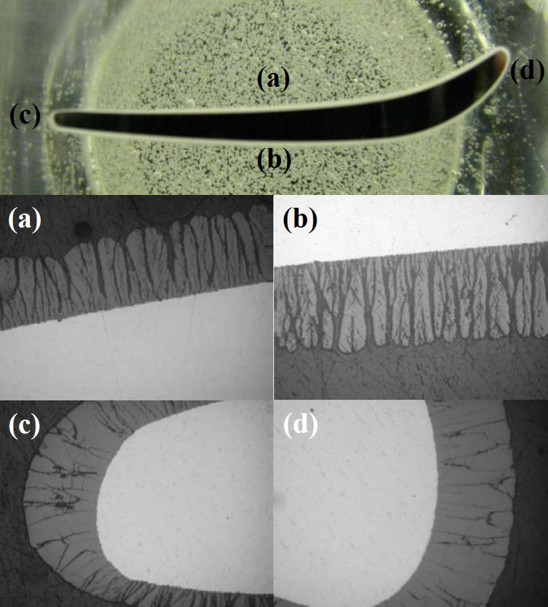
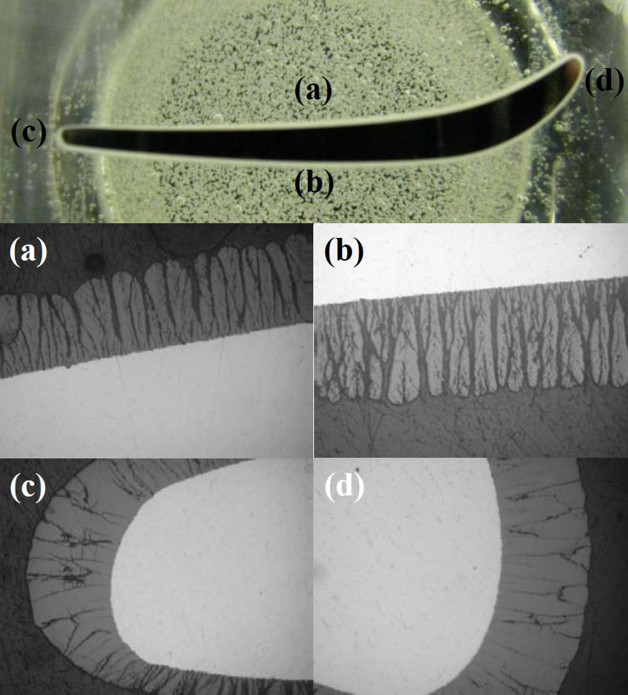

航太能源領域應用
航太產業中常見的塗層有抗高溫的熱障塗層、可磨耗塗層、耐高溫金屬塗層（T400、T800）、耐磨耗塗層等。其中熱障塗層主要由兩個塗層組合而成，分別為鍵結層（Bond Coating）和頂層（Top Coating），而這兩種塗層所使用的熱噴塗工藝也不相同。以鍵結層而言，目前常見的工藝有低壓電漿噴塗（LPPS）、高壓高速火焰（HVOF、HVAF）。在鍵結層中所使用的材料為MCrAlY（M= Ni, Co, NiCo, CoNi），與頂層材料有良好的親和性。在頂層的工藝中目前主流為使用大氣電漿噴塗（APS），近幾年有相當多的國內外科研單位與製造商使用大氣漿料電漿噴塗（ASPS）來進行頂層的製作。頂層所使用的材料為氧化釔安定氧化鋯（8YSZ），該材料的特色為低熱傳導係數且相較於其他的絕熱材料價格相對便宜。這些塗層應用在各級的動葉、靜葉、動葉環、燃燒桶、密封環、飛機起落架等各式應用。
 
